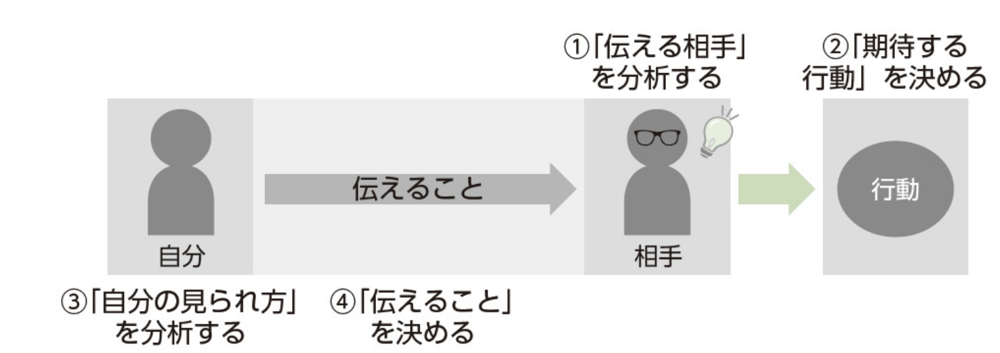
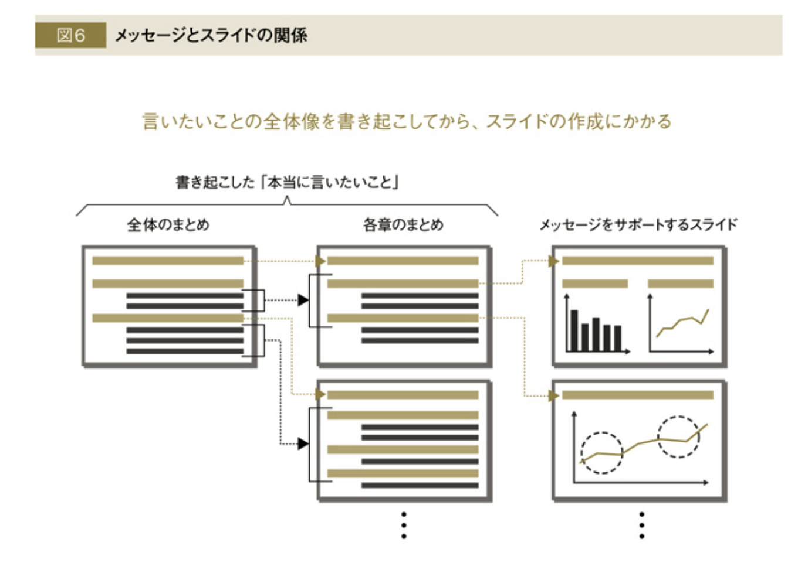
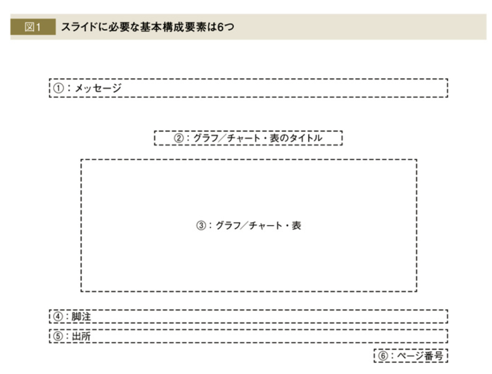

<!DOCTYPE html>
<html lang="en">
  <head>
    <meta charset="utf-8" />
    <meta name="viewport" content="width=device-width, initial-scale=1.0, maximum-scale=1.0, user-scalable=no" />

    <title>reveal-md</title>
    <link rel="shortcut icon" href="./favicon.ico" />
    <link rel="stylesheet" href="./dist/reset.css" />
    <link rel="stylesheet" href="./dist/reveal.css" />
    <link rel="stylesheet" href="./dist/theme/black.css" id="theme" />
    <link rel="stylesheet" href="./css/highlight/base16/zenburn.css" />


  </head>
  <body>
    <div class="reveal">
      <div class="slides"><section ><section data-markdown><script type="text/template"># パワポ作成原則
</script></section><section data-markdown><script type="text/template">## スライドの目的
- ビジネスの根幹は「人を動かす」こと
- より早く、正確に、少ない労力で仕事が進む

</script></section><section data-markdown><script type="text/template">## 作成準備
- スライドによって得られる結果を紙に書き出す
- ストーリー（ヘッドタイトル）を紙に書き出す
- チャートグラフのデッサンを書き出す

</script></section><section data-markdown><script type="text/template">## スライドルール
- フォーマット
- ヘッドメッセージとスタンス
  - ヘッドメッセージとチャートとグラフ（軸）
- 全体構成（タイトル・サマリ・目次・結論）
- 何を描かないかを決める
  - SN比を高める
  - 重複は消す
</script></section><section data-markdown><script type="text/template">## グラフのルール
- メッセージタイトルとの関係(軸)
- 基本は5種類・比較内容で決める

</script></section><section data-markdown><script type="text/template">## チャートのルール
- メッセージタイトルのとの関係(軸)
- 人間の認知
- ピクトグラムがおすすめ（トレンドはふらっとデザイン

</script></section><section data-markdown><script type="text/template">## 環境作り
- パワポの設定・ショートカット


</script></section></section><section ><section data-markdown><script type="text/template"># スライドの目的
- 人を動かす
- より早く、正確に、少ない労力で仕事が進む
</script></section><section data-markdown><script type="text/template">## 人を動かす
<div style="font-size: 0.6em;">
    <p>
    ビジネスの根幹は人を動かすことである<br>
    ターゲットを希望の行動に促すことを目指す<br>  
    そのために、ターゲットの心理やインセンティブを分析していく
    </p>
</div>

<div style="display: flex; justify-content: space-around;margin-top: -20px;">
  
</div>


</script></section><section data-markdown><script type="text/template">## より早く、正確に、少ない労力で仕事が進む
一人歩き資料を作成=自分の説明が不要
- メッセージが1枚１枚で明確
- グラフとチャートの伝えたいことが一目瞭然
- 根拠がある
- アクションが明確


</script></section></section><section ><section data-markdown><script type="text/template"># 作成準備
まずは、スライドではなく、紙に書き出していく
- スライドによって得られる結果を紙に書き出す
- ストーリー（ヘッドタイトル）を紙に書き出す
- チャートグラフのデッサンを書き出す
</script></section><section data-markdown><script type="text/template">## スライドによって得られる結果を紙に書き出す
<div style="font-size: 0.6em;">
    <p>
    家の設計図がないと家を建てないように、目的がないのに資料を作成しない<br>
    「誰に」対して、「何を」伝え、「どのような行動」を取ってもらうかを書く
    </p>
</div>


<div style="display: flex; justify-content: space-around;margin-top: -20px;">
  
</div>

<div style="text-align: left; position: fixed; bottom: -3pt; width: 100%;">
  <small>
    <a href="https://onl.bz/q5xHTij">PowerPoint資料作成プロフェッショナルの大原則</a>
  </small>
</div>
</script></section><section data-markdown><script type="text/template">## ストーリー（ヘッドタイトル）を紙に書き出す
<div style="font-size: 0.6em;">
    <p>
    </p>
</div>

<div style="display: flex; justify-content: space-around;margin-top: -20px;">
  
</div>

<div style="text-align: left; position: fixed; bottom: -3pt; width: 100%;">
  <small>
    <a href="https://onl.bz/L9Zwew3">外資系コンサルのスライド作成術</a>
  </small>
</div>
</script></section><section data-markdown><script type="text/template">## チャートグラフのデッサンを書き出す

</script></section></section><section ><section data-markdown><script type="text/template"># スライドルール
</script></section><section data-markdown><script type="text/template">
## パワポの形式
<div style="font-size: 0.65em;">
    <p>
    </p>
</div>

<div style="display: flex; justify-content: space-around;margin-top: -20px;">
  
</div>

</script></section></section><section ><section data-markdown><script type="text/template">## グラフのルール
グラフの横軸と縦軸はメッセージで登場した言葉にする
</script></section><section data-markdown><script type="text/template">## チャートのルール


</script></section></section><section ><section data-markdown><script type="text/template"># 参考図書


</script></section><section data-markdown><script type="text/template">## パワポを作成する前の分析

<div style="display: flex; justify-content: space-around;align-items: center;">
  
    仕事の価値は問の質と解の質で決まる<br>
    問の質を高めるための、<br>情報収集について理解できる
</div>


<div style="text-align: left; margin-top: 70px;">
  <small>
    <a href="https://onl.bz/haXWKqB">ISSUE Driven</a>
  </small>
</div>

</script></section><section data-markdown><script type="text/template">## スライド１枚１枚の作り方
#### 
<div style="display: flex; justify-content: space-around;align-items: center;">
  
    スライド・グラフ・チャートの<br>基本フォーマットと<br>シンプルな原則を理解できる
    
</div>

<div style="text-align: left;margin-top: 70px;">
  <small>
    <a href="https://onl.bz/L9Zwew3">外資系コンサルのスライド作成術</a>
  </small>
</div>
</script></section><section data-markdown><script type="text/template">## パワポ作成の最初から最後までを一気通貫で理解する

<div style="display: flex; justify-content: space-around;align-items: center;">
  
    パワーポイントの便利な設定から送付方法まで網羅的にカバー<br>
    一人歩きして人を動かせる資料を早く作る本
</div>


<div style="text-align: left;margin-top: 70px;">
  <small>
    <a href="https://onl.bz/q5xHTij">PowerPoint資料作成プロフェッショナルの大原則</a>
    
  </small>
</div>


</script></section></section></div>
    </div>

    <script src="./dist/reveal.js"></script>

    <script src="./plugin/markdown/markdown.js"></script>
    <script src="./plugin/highlight/highlight.js"></script>
    <script src="./plugin/zoom/zoom.js"></script>
    <script src="./plugin/notes/notes.js"></script>
    <script src="./plugin/math/math.js"></script>
    <script>
      function extend() {
        var target = {};
        for (var i = 0; i < arguments.length; i++) {
          var source = arguments[i];
          for (var key in source) {
            if (source.hasOwnProperty(key)) {
              target[key] = source[key];
            }
          }
        }
        return target;
      }

      // default options to init reveal.js
      var defaultOptions = {
        controls: true,
        progress: true,
        history: true,
        center: true,
        transition: 'default', // none/fade/slide/convex/concave/zoom
        slideNumber: true,
        plugins: [
          RevealMarkdown,
          RevealHighlight,
          RevealZoom,
          RevealNotes,
          RevealMath
        ]
      };

      // options from URL query string
      var queryOptions = Reveal().getQueryHash() || {};

      var options = extend(defaultOptions, {}, queryOptions);
    </script>


    <script>
      Reveal.initialize(options);
    </script>
  </body>
</html>
